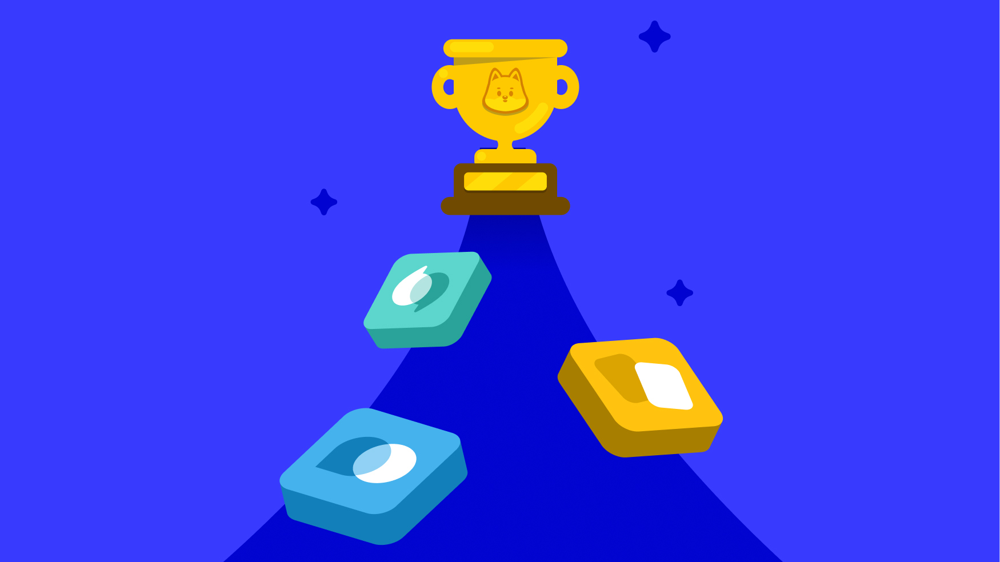
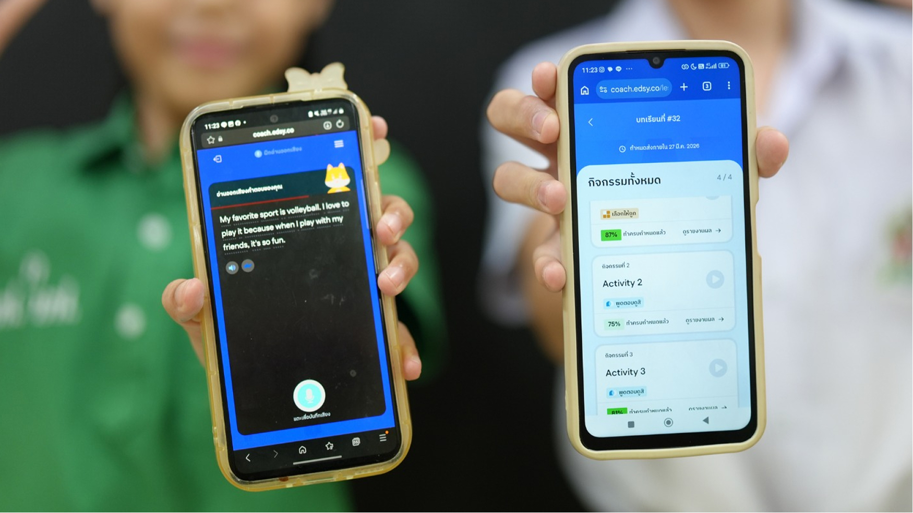
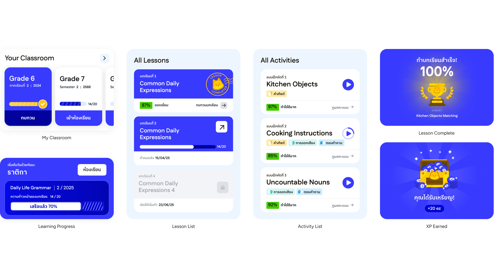
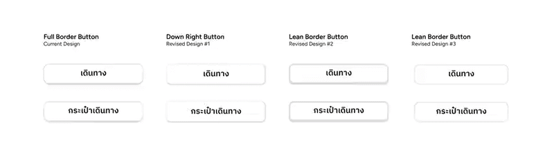
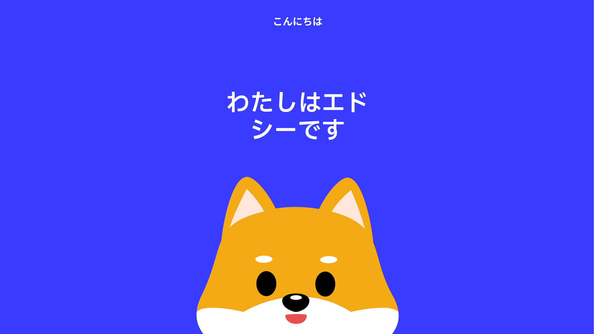
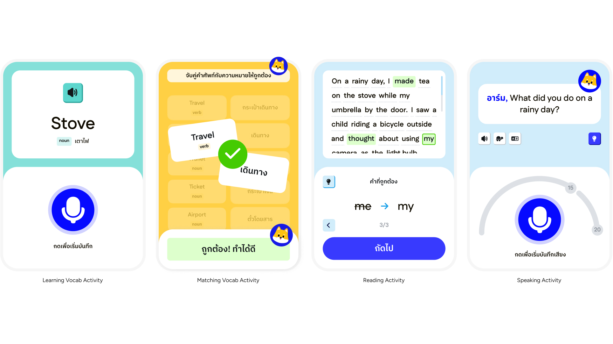
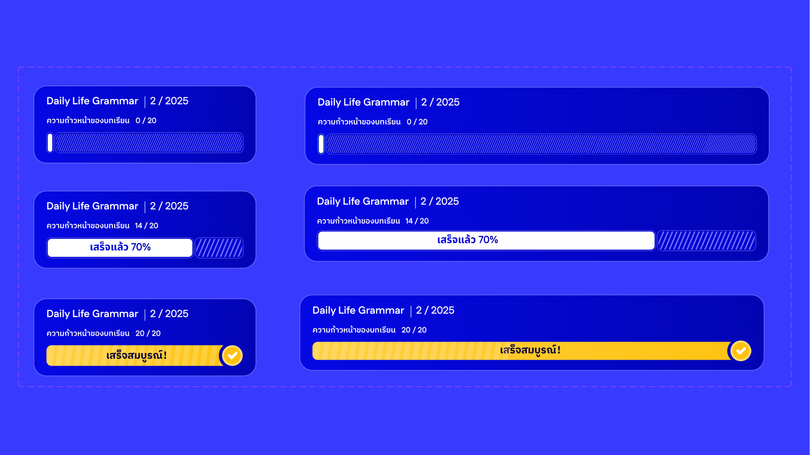
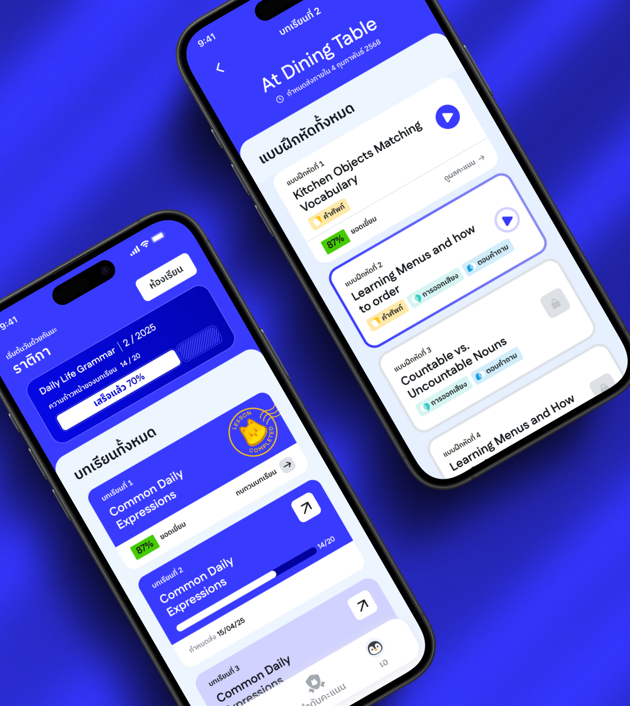

How do we make learning English feel a little more engaging?
Learning a language is already a big task. Doing it through a screen, in a busy classroom, with different devices and different levels of confidence? That's another story. Here's how we looked at the real learning experience behind EDSY and explored ways to make it feel more engaging, approachable, and a little more fun.

A little field trip to the classroom.
Before jumping into screens and interactions, I wanted to understand what using EDSY actually looked like in a real classroom.
So we went to schools, observed students using the platform, and talked with teachers about what was working and what wasn't. It was a chance to look beyond the ideal user journey and see what happened when the product met everyday classroom life.

01. Audio and environment constraints
In a shared classroom, up to 20 students could take tests at the same time. That meant overlapping audio, background conversations, and plenty of distractions. Listening exercises that were meant to test comprehension became much harder to complete.
02. Individual learning, shared classrooms
Students naturally helped each other when they got stuck. It's a lovely thing to see, but it also made individual assessment less reliable. Sometimes, the answer on the screen wasn't necessarily the answer the student had figured out on their own.
03. Two learning tracks, one student
The online curriculum and classroom teaching didn't always connect. Students could find themselves moving between two learning tracks, while teachers needed a clearer way to follow up on what was happening in the platform.
04. Different devices, different experiences
Students used different devices, screen sizes, and browsers. An experience that looked fine on one screen could feel cramped or inconsistent on another. We needed to make the interface more predictable without losing sight of the existing MVP.
Okay, so how do we make learning more engaging?
Once we had a better picture of the classroom, the next question was how to make the experience feel easier to follow and more rewarding to come back to.
I explored a few behavioral design directions: making progress more visible, giving students clearer feedback, encouraging participation, and reducing the little moments of friction that can interrupt a learning session.

The idea wasn't to add more things to the screen. It was to make each interaction feel more understandable, give students a reason to stay engaged, and help them see that they're moving forward.
The button experiment. Yes, just a button.
Sometimes the smallest interactions deserve a little attention. I explored how a button could feel more responsive and satisfying when a student taps it.
There's also the reality of internet connectivity. When a connection is unstable, an action might take longer than expected. Without feedback, students may wonder whether the button worked and tap it again.

The experiment explored how the button could acknowledge a tap immediately, then communicate that something was still processing. The goal was to make the wait feel less uncertain, rather than leave students wondering what happened.
Meet the new EDSY sidekick.
A learning platform doesn't have to feel serious all the time. I explored how the EDSY mascot could become a more recognizable companion throughout the experience.

Instead of simply adding AI-themed accessories, the direction was to make the mascot feel friendly, intelligent, and interactive. Small animations and responses could give the experience a little more life.
I also explored different mascot variations as profile avatars. This gives students a way to express a little bit of themselves and feel more connected to the learning environment.
Different exercises, different little interactions.
Not every English exercise should feel the same. Different skills call for different ways to interact, so I explored a range of exercise formats that could make learning feel more active.

The explorations included fill-in-the-blank questions, vocabulary matching, reading words with audio, and speaking activities where students could record their voices.
Each format has its own little interaction. The goal was to keep the experience varied while making the next step clear and easy to understand.
Designing for the devices students actually have.
A good experience needs to hold up beyond the screen it was designed on. With students using different devices and browsers, consistency was an important part of the work.

I focused on creating more consistent layouts and interaction patterns while working within the constraints of the existing MVP. The aim was to make the platform feel familiar and usable, even when the screen changed.
Putting all the little pieces together.
This project was a reminder that improving a learning experience doesn't always mean introducing one big new feature. Sometimes it's about noticing the small things that make a session harder than it needs to be.
From classroom observations to interaction experiments, mascot explorations, exercise formats, and responsive layouts, each part helped shape a more approachable experience for students.

And that's a wrap.
Working on EDSY made me appreciate the details that are easy to overlook when designing digital products. A classroom isn't a controlled environment. An internet connection isn't always perfect. And students don't always behave the way we expect them to. That's exactly why observing real people matters.
Sometimes the most interesting design decisions don't come from adding another feature or creating a completely new interface. They come from noticing something small like a student struggling to hear an exercise, someone waiting for a button to respond, or a little opportunity to make an ordinary interaction feel more fun.
Because at the end of the day, we're not just designing screens for students to complete. We're designing experiences that make them want to keep learning. And that's the fun part.